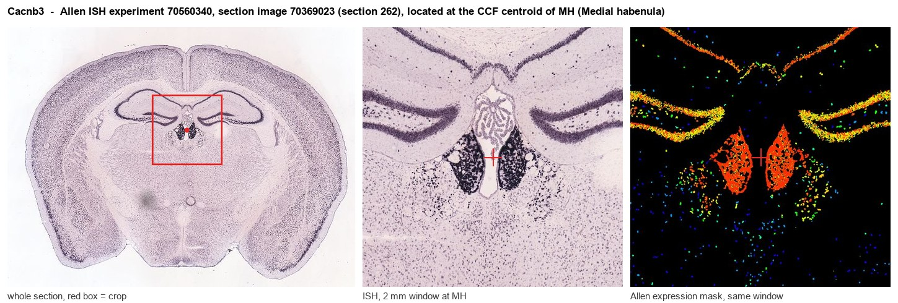
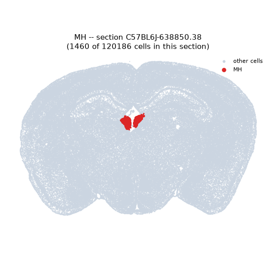
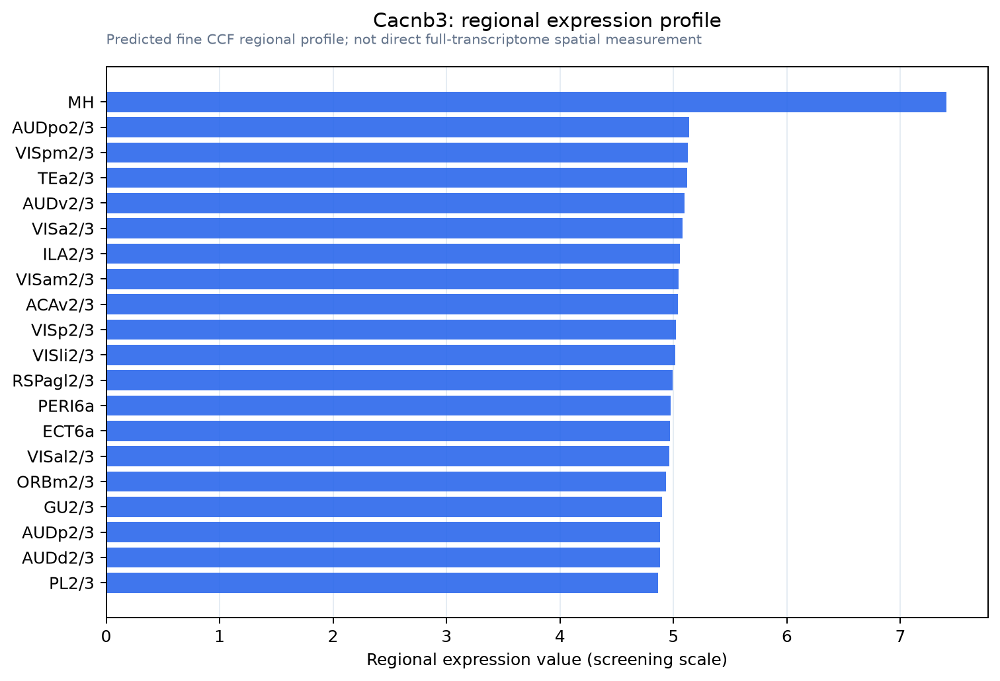

Cacnb3
Voltage-dependent L-type calcium channel subunit beta-3 (CAB3) (Calcium channel voltage-dependent subunit beta 3) (CCHB3)
Spatial tier: REGION_BIASED · Class: ION_CHANNEL · Top region: MH (Medial habenula) · Positive regions: 42/554
41.2Discovery Score
40.4Targetability Score
CEvidence grade C
What this means: Cacnb3: fine CCF profile is region-biased toward MH (top regions: MH, AUDpo2/3, VISpm2/3, TEa2/3, AUDv2/3); this is a discovery lead, not direct proof.
Function in MH: evidence, prediction, innovation
- Gene function
- Cacnb3 encodes Cavbeta3, a cytoplasmic auxiliary subunit of high-voltage-activated calcium channels. It binds the alpha-interaction domain of Cav1 and Cav2 pore-forming subunits, chaperones them to the plasma membrane and shifts their activation and inactivation kinetics; in brain it is a dominant beta subunit partnering Cav2.2 (N-type). Cavbeta3 therefore sets how much Ca2+ enters at presynaptic terminals and how much transmitter is released.
- Region function
- The medial habenula is an epithalamic nucleus whose cholinergic (ChAT/Slc17a6) and substance P (Tac1) neurons project almost exclusively through the fasciculus retroflexus to the interpeduncular nucleus. This pathway controls nicotine aversion and withdrawal, anxiety, fear and aversive-memory expression.
- Published in this region
- expression only No region-specific literature found. Allen ISH shows Cacnb3 is markedly MH-enriched (expression energy 19.5 and 45.9 in two datasets versus 8.2-8.4 for grey matter and 12.5-15.3 for lateral habenula), and Ferrandiz-Huertas et al. 2012 mapped Cavbeta subunits across developing mouse forebrain; functionally, the MHb-IPN terminal is defined by Cav2.3 (R-type) channels whose gating is scaled by KCTD8/KCTD12b (Bhandari et al. 2021, eLife).
- Predicted function
- Prediction: Cavbeta3 should be the trafficking subunit that loads Cav2.2/Cav2.3 into MHb cholinergic axon terminals in the interpeduncular nucleus and into the somatic high-threshold Ca2+ conductance that Kawai et al. 2025 showed sustains the MHb long-lasting refractory period. Deleting Cacnb3 in MHb neurons should lower presynaptic Ca2+ entry and transmitter release at MHb-IPN synapses, shorten the nicotine-evoked refractory period, and attenuate nicotine-withdrawal aversion and cued fear. Global Cacnb3 nulls already show reduced anxiety and impaired learning.
- Innovation
- ★★★★★ 5/5 There are zero habenula publications on Cacnb3 despite clear MH enrichment in the Allen atlas and a pathway whose defining feature is unusual presynaptic Ca2+ channel biology.
- Tools
- Cacnb3 global knockout mice (Murakami et al. 2007); no Cacnb3-Cre line is reported, so conditional work needs a floxed Cacnb3 allele plus ChAT-IRES-Cre (JAX 006410) or Tac1-IRES2-Cre (JAX 021877); Cavbeta3 antibodies; indirect pharmacology with omega-conotoxin GVIA (Cav2.2) and SNX-482 (Cav2.3).
- References
Direct evidence located at the region

Allen ISH experiment 70560340, section image 70369023 (section 262): the section that contains the CCF centroid of Medial habenula according to the Allen image-to-atlas alignment (reference_to_image), with a 2 mm window around that point. Left: whole section, red box = window. Middle: ISH signal. Right: Allen's expression-mask view of the same window. open this image in the Allen viewer
Look it up yourself: Allen Mouse Brain ISH for Cacnb3Allen reference atlas: MH (structure 483)ABC Atlas MERFISH viewer(in the ABC Atlas choose dataset MERFISH-C57BL6J-638850-CCF, colour cells by gene "Cacnb3" or by parcellation_substructure "MH")All genes confined to MH + 3-D brain
Direct spatial evidence
MERFISH REGION LOCATOR

Regional expression figure

Predicted WMB × fine-CCF profile; not direct full-transcriptome spatial measurement.
Spatial profile
Evidence and specificity
- Evidence status
- PREDICTED_FINE
- Direct sources
- None; predicted localization only
- Exclusive threshold
- 12 positive regions out of 554
- Spatial specificity
- 0.266
- Top-region fraction
- 0.050
- Filter status
- PASS
Interpretation limits
- Cell-type-to-region projection is imputed expression, not direct spatial measurement.
- Adult reference atlases do not establish stability across age, sex, strain, state, or disease.
- Transcript abundance does not guarantee protein abundance or genetic-tool performance.